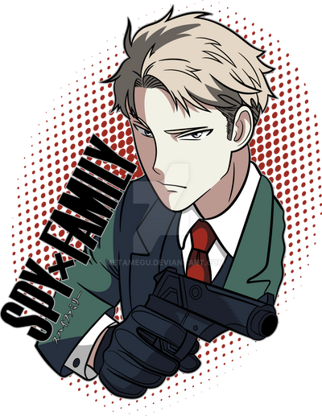

Loid Forger
Loid Forger is a spy who works under the codename "Twilight". His true identity remains unknown. When not in spy mode, he works as a psychologist in a local hospital. His current mission to prevent a war from happening all depends on his made-up family. He adopted Anya from a children's home, and Anya found Yor because of her psychic abilities. To this day, Loid doesn't know about Anya's abilities to read minds.
Yor Forger
Yor Forger is an assassin who works under the codename "Thorned Princess". During the day, she's a busniessman who hides her secret job. To help hide her job from her colleagues, she married Loid Forger to show that she actually has a life outside of her work. She doesn't know Loid is a spy, and Loid doesn't know Yor is an assassin.
Anya Forger
Anya is a young girl who escaped from a lab and found herself in a children's shelter. She's not that smart, but she can read people's minds. As part of Loid's spy mission, he needed a child to enroll at the most prestigious school to be in contact with the dean. Anya plays a very important part here because she's friends with the dean's son.